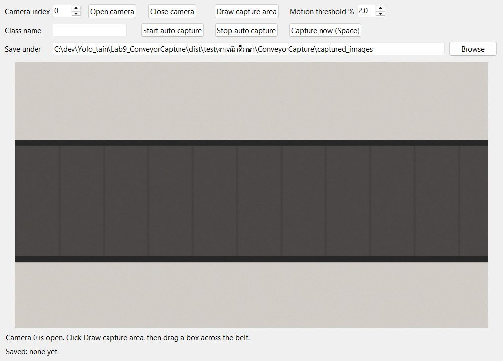
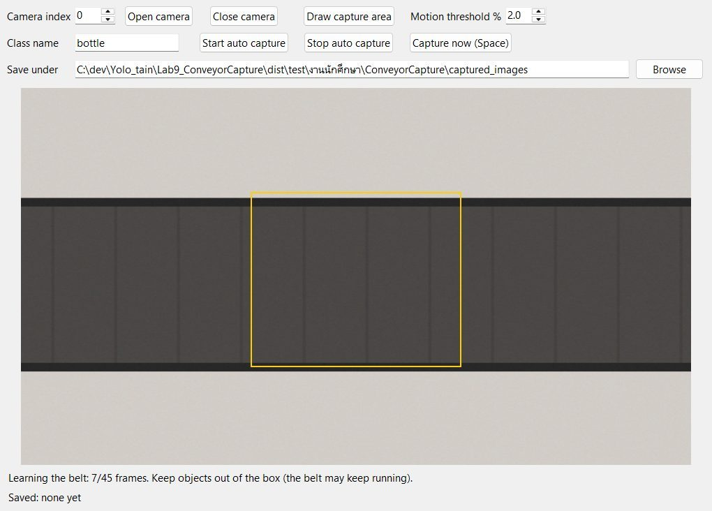
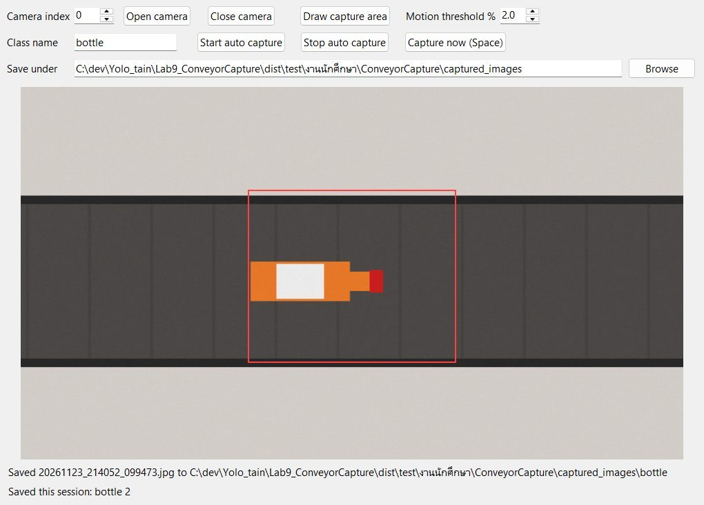
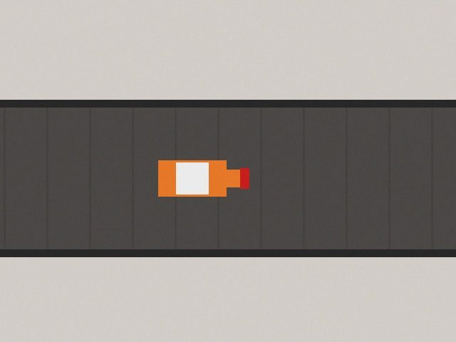

โปรแกรมดูภาพจากเว็บแคม แล้วถ่ายภาพวัตถุชิ้นละ 1 ภาพให้เองเมื่อวัตถุวิ่งมาถึงกลางกรอบ ภาพที่ได้จะใช้ทำชุดข้อมูลเทรน YOLO ต่อไป
| รายการ | รายละเอียด |
|---|---|
| คอมพิวเตอร์ | Windows 10 หรือ 11 · พื้นที่ว่างประมาณ 300 MB |
| Python | เวอร์ชัน 3.9 ขึ้นไป (แนะนำ 3.12 หรือ 3.13) จาก python.org · ดูขั้นที่ 2 |
| กล้อง | เว็บแคม USB (กล้องในตัวโน้ตบุ๊กใช้ได้ แต่ยึดให้มองสายพานได้ยาก) |
| อินเทอร์เน็ต | ต้องใช้ตอนเปิดโปรแกรมครั้งแรกเท่านั้น (ดาวน์โหลดประมาณ 70 MB) ครั้งต่อไปใช้แบบออฟไลน์ได้ |
สายพานในแล็บเปิดและกลับทิศด้วยสวิตช์ของตัวเครื่องเอง โปรแกรมนี้ไม่ได้ควบคุมสายพาน แค่ดูภาพจากกล้องอย่างเดียว
กดปุ่ม Windows พิมพ์ cmd แล้วกด Enter จากนั้นพิมพ์:
py --version
ถ้าขึ้น Python 3.9 หรือใหม่กว่า ข้ามไปขั้นที่ 3 ได้เลย ถ้าขึ้นว่าไม่รู้จักคำสั่ง ให้ติดตั้งตามนี้:
https://www.python.org/downloads/ กดปุ่ม Download Python 3.x.xAdd python.exe to PATH ที่ด้านล่างของหน้าต่างก่อนSetup was successful แล้วกด Closetcl/tk and IDLE ออกConveyorCapture_Student.zip → Extract All… (แตกไฟล์ทั้งหมด) → ExtractConveyorCapture ไปไว้ในที่ที่หาง่าย เช่น Documents หรือ C:\ConveyorCaptureข้างในจะมีไฟล์ดังนี้:
ConveyorCapture\ ├── Manual.html คู่มือนี้ ├── START_CAPTURE.bat ← ดับเบิลคลิกเพื่อเปิดโปรแกรม ├── MAKE_ZIP.bat ← ดับเบิลคลิกเพื่อรวมภาพเป็น ZIP ตอนส่งงาน └── app\ ตัวโปรแกรม (ไม่ต้องแตะ)
หลังใช้งานจะมีโฟลเดอร์ .venv (ตัวโปรแกรมที่ติดตั้งแล้ว) และ captured_images (ภาพที่เก็บ) เพิ่มขึ้นมา
ต่อเว็บแคมก่อน แล้วดับเบิลคลิก START_CAPTURE.bat
ครั้งแรกจะมีหน้าต่างสีดำขึ้นมาติดตั้งเองประมาณ 1–3 นาที ต้องต่ออินเทอร์เน็ต อย่าปิดหน้าต่างนี้ จะเห็นประมาณนี้:
============================================================ First run: setting up (needs internet, about 1-3 minutes) ============================================================ Using: python Installing opencv-python and Pillow ... Collecting opencv-python (from -r app\requirements.txt (line 1)) ... Successfully installed Pillow-13.0.0 numpy-2.5.5 opencv-python-5.1.0.95 Starting Conveyor Image Capture ...
เลขเวอร์ชันในเครื่องของคุณอาจต่างจากนี้ได้ บรรทัดที่ต้องเห็นคือ Successfully installed ตามด้วย Starting Conveyor Image Capture จากนั้นหน้าต่างโปรแกรมจะเปิดขึ้น ครั้งต่อไปจะเปิดทันทีโดยไม่ติดตั้งซ้ำ
หน้าต่างสีดำจะเปิดค้างไว้ตลอดที่ใช้โปรแกรม ถ้าเกิดข้อผิดพลาด ข้อความจะขึ้นที่หน้าต่างนี้ ปิดหน้าต่างสีดำได้เมื่อเลิกใช้งานแล้ว
กด Open camera ภาพจากกล้องจะขึ้นกลางหน้าต่าง ถ้าเปิดได้กล้องผิดตัว (เช่น กล้องหน้าของโน้ตบุ๊ก) ให้เปลี่ยน Camera index เป็น 1 หรือ 2 แล้วกด Open camera ใหม่

bottle, can, red_cap (ใช้ได้เฉพาะ A–Z, a–z, 0–9, _ และ - ห้ามเว้นวรรค ห้ามภาษาไทย)Learning the belt: …/45 frames โปรแกรมกำลังจำหน้าตาสายพานเปล่า ใช้เวลา 2–3 วินาที ห้ามมีวัตถุในกรอบช่วงนี้
เมื่อแถบล่างเปลี่ยนเป็น Auto capture: motion 0.0% … waiting for an object ให้วางวัตถุบนสายพานทีละชิ้น ด้านใดก็ได้ เมื่อวัตถุวิ่งมาถึงกลางกรอบ กรอบจะเป็นสีแดงและบันทึกภาพ 1 ใบ บรรทัดล่างสุดนับจำนวนภาพต่อคลาสให้

ภาพที่บันทึกเป็นภาพเต็มเฟรมจากกล้อง ไม่ได้ตัดเฉพาะในกรอบ:

captured_images\bottle\| สีกรอบ | ความหมาย |
|---|---|
| เขียว | วาดกรอบแล้ว ยังไม่ได้กด Start auto capture |
| เหลือง | กำลังจำสายพานเปล่า หรือรอวัตถุชิ้นถัดไป |
| แดง | มีวัตถุอยู่กลางกรอบ (ถ่ายไปแล้ว 1 ภาพ จะไม่ถ่ายซ้ำจนกว่าชิ้นนี้จะออกไป) |
กด Stop auto capture → แก้ Class name → กด Start auto capture ใหม่ ภาพของแต่ละคลาสจะแยกโฟลเดอร์ให้เอง
| ปุ่ม/ค่า | ใช้ทำอะไร |
|---|---|
| Capture now (Space) | ถ่ายภาพทันที 1 ใบโดยไม่รอ ใช้เก็บท่าที่ auto พลาด หรือกด Space แทนก็ได้ (คลิกบนภาพก่อน ไม่ให้เคอร์เซอร์อยู่ในช่องพิมพ์) |
| Motion threshold % | วัตถุต้องกินพื้นที่ในกรอบอย่างน้อยกี่ % จึงนับว่ามีของ ค่าเริ่มต้น 2.0 ดูวิธีปรับในขั้นที่ 9 |
| Save under / Browse | โฟลเดอร์ที่เก็บภาพ ค่าเริ่มต้นคือ captured_images ในโฟลเดอร์โปรแกรม ไม่ต้องเปลี่ยน เพราะ MAKE_ZIP.bat จะหาภาพจากที่นี่ |
โมเดลจะเก่งได้เท่าที่ภาพสอนมันเท่านั้น ใช้รายการนี้เช็กก่อนส่ง:
ปิดโปรแกรม แล้วเปิดโฟลเดอร์ captured_images จะเห็นโฟลเดอร์ย่อยตามชื่อคลาส เปิดดูแล้วลบภาพเหล่านี้ทิ้ง:
can) ย้ายไปโฟลเดอร์ที่ถูกดับเบิลคลิก MAKE_ZIP.bat จะได้ไฟล์ conveyor_images.zip ในโฟลเดอร์โปรแกรม หน้าจอจะสรุปจำนวนภาพแบบนี้:
bottle 62 images
can 55 images
total 117 images
Wrote C:\...\ConveyorCapture\conveyor_images.zip (9.8 MB)
Next: hand in this ZIP as your instructor asked.
(For Lab 10, upload it to the top level of My Drive.)
ตัวเลขข้างบนเป็นตัวอย่าง ของจริงจะเป็นจำนวนภาพของคุณ ถ้าขึ้น [WARN] แปลว่ายังมีบางอย่างไม่ครบ:
| ข้อความ | ความหมาย |
|---|---|
[WARN] Only one class. | มีวัตถุชนิดเดียว โมเดลต้องมีอย่างน้อย 2 คลาสจึงจะเรียนรู้ความต่างได้ |
[WARN] A class has fewer than 30 images. | มีคลาสที่ภาพน้อยเกินไป ให้เก็บเพิ่มให้ได้ 50 ภาพขึ้นไป |
[ERROR] No images found | ยังไม่มีภาพใน captured_images หรือเปลี่ยน Save under ไปที่อื่น |
conveyor_images.zip ตามช่องทางที่ผู้สอนกำหนด| อาการ | สาเหตุและวิธีแก้ |
|---|---|
หน้าต่างดำขึ้นแล้วหายไปทันที หรือขึ้น No working Python 3.9+ with tcl/tk was found | ยังไม่ได้ติดตั้ง Python หรือติดตั้งไม่สมบูรณ์ ทำขั้นที่ 2 ใหม่ ถ้าติดตั้งแล้วยังขึ้น ให้ถอน Python ออกจาก Settings → Apps แล้วติดตั้งใหม่แบบ Install Now |
Installation failed | อินเทอร์เน็ตหลุดระหว่างดาวน์โหลด ต่อเน็ตแล้วดับเบิลคลิก START_CAPTURE.bat ใหม่ จะติดตั้งต่อให้ |
Could not create a working Python environment | ย้ายโฟลเดอร์ ConveyorCapture ไปไว้ที่ C:\ConveyorCapture แล้วรันใหม่ (โฟลเดอร์ใน OneDrive หรือโฟลเดอร์ที่ซิงก์อยู่มักมีปัญหา) |
ข้อความมีคำว่า tcl, tk หรือ init.tcl | ลบโฟลเดอร์ .venv ในโฟลเดอร์โปรแกรมทิ้ง แล้วดับเบิลคลิก START_CAPTURE.bat ใหม่ |
Could not open camera index 0 | ยังไม่ได้ต่อกล้อง หรือกล้องถูกโปรแกรมอื่นใช้อยู่ (Zoom, Teams, LINE, แอป Camera) ปิดโปรแกรมนั้นก่อน หรือลอง Camera index เป็น 1 |
| ภาพในโปรแกรมดำทั้งจอ แต่ไม่มี error |
1) Settings → Privacy & security → Camera: เปิด Camera access และ Let desktop apps access your camera 2) โปรแกรมป้องกันไวรัสบางตัว (เช่น Kaspersky) บล็อกกล้องเงียบ ๆ ต้องอนุญาต .venv\Scripts\python.exe ในโปรแกรมป้องกันไวรัส |
Camera frame read failed | กล้องหลุดหรืออ่านภาพไม่ทัน กด Close camera แล้ว Open camera ใหม่ ถ้ายังไม่หาย ให้ถอดสาย USB แล้วเสียบใหม่ |
| ถ่ายรัว ๆ ทั้งที่ไม่มีวัตถุ | ดูตัวเลข motion ที่แถบล่างตอนสายพานวิ่งเปล่า ควรใกล้ 0% ถ้าสูงกว่า threshold แปลว่ากล้องสั่นหรือลายสายพานถูกนับเป็นวัตถุ ให้ยึดกล้องให้แน่น แล้วเพิ่ม Motion threshold ทีละ 1 จนหยุดถ่ายเอง จากนั้นกด Stop แล้ว Start ใหม่ |
| วัตถุวิ่งผ่านแต่ไม่ถ่าย | วัตถุเล็กเกินไปเมื่อเทียบกับกรอบ ให้วาดกรอบให้เล็กลง หรือลด Motion threshold · ถ้าวัตถุสีกลืนกับสายพาน ให้ใช้ปุ่ม Capture now แทน |
| ชิ้นเดียวได้ 2 ภาพ | เกิดเมื่อวัตถุหยุดหรือกลิ้งถอยกลับกลางกรอบ ลบภาพที่ซ้ำทิ้งตอนตรวจภาพ |
กด Start แล้วขึ้น Use English letters, digits… | Class name มีภาษาไทย เว้นวรรค หรือสัญลักษณ์ ใช้แบบ red_cap แทน red cap |